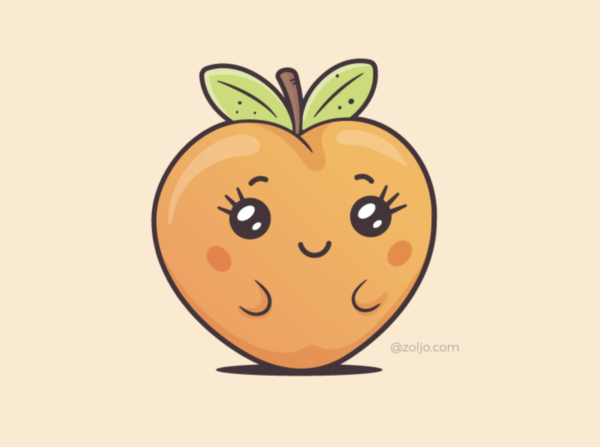
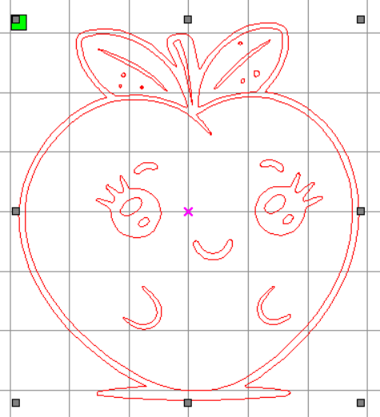

1. Lab Safety & Safety Rules
Essential protocols and equipment checks before operating digital fabrication machinery.
Laser Safety
Before operating the laser cutter, I followed the laboratory's laser-cutting safety rules. I used the recommended safety equipment and ensured that the machine was operated only under proper supervision. The laser cutter door was kept closed during operation to prevent exposure to the laser beam.
Exhaust System
The exhaust/blower system was used during laser cutting to remove smoke and fumes generated from the material. Proper ventilation is important because laser processing can produce smoke and potentially harmful fumes.
Chiller
The laser cutter uses a cooling system/chiller to maintain the required operating temperature of the laser tube. The cooling system was checked before operation to ensure safe machine operation.
Earthing
The machine's electrical connection and earthing arrangement were treated as important safety requirements before operation. The laser cutter was operated through the laboratory's designated electrical setup.
Air Assist
Air assistance/blowing is used during laser cutting to help control the cutting process and reduce the accumulation of smoke and heat around the cutting area. The machine information provided in the laboratory specifies a lower blowing system.
General Machine Safety
I meticulously followed the laboratory's general safety instructions, which explicitly included:
- Wearing appropriate safety equipment.
- Keeping the machine door closed during operation.
- Using only permitted materials.
- Checking the machine settings before starting.
- Keeping the blower/cooling system operational.
- Never leaving the laser cutter unattended while operating.
- Cleaning the working area after use.
- Informing the technical staff about any machine problems or damage.
- Consulting the technical staff when unsure about a material or machine setting.
2. Machine Details
The laser-cutting activity was performed using a CO₂ laser cutter available in the fabrication laboratory.
| Specification | Actual Detail |
|---|---|
| Make | Forge laboratory laser cutter (manufacturer name should be confirmed from machine label) |
| Model | 1490 CO₂ Laser |
| Bed / Working Area | 1300 × 900 mm |
| Laser Tube Wattage | 150 W |
| Machine Power | 1000 W |
| Cutting Speed | 25 m/min (machine specification) |
| Engraving Speed | 55 m/min (machine specification) |
| Accuracy | 0.1 mm |
| Working Temperature | 0°C – 40°C |
| Blowing System | Lower Blowing System |
| Control Software | RDWorks V8.01.65 |
3. Materials Used
The material used for the laser-cutting activity was a transparent plastic sheet (acrylic). The material was provided by the fabrication laboratory and was selected because it is suitable for laser cutting and produces a clear engraved/cut result.
| Parameter | Actual Value |
|---|---|
| Material Type | Transparent Acrylic Plastic |
| Material Category | Plastic |
| Thickness | 5 mm |
| Colour | Transparent / Clear |
| Source | Fabrication Laboratory |
4. Selected Design

I selected a cute fruit/apple-shaped character design for my custom keychain. This design was chosen because it has a combination of outer cutting geometry and internal engraving/detailing, making it highly suitable for demonstrating both design preparation and laser-processing techniques.
The design contains:
- A rounded outer fruit shape.
- Decorative leaves at the top.
- Facial features such as eyes and a smile.
- Additional internal line details.
- A small "K" element representing my initial.
5. Image-to-DXF Conversion
The selected apple design was obtained from Google Images and used as the reference image for the laser-cutting activity. The image was then converted into a DXF file using the online Convertio tool. This process involved uploading the image, choosing DXF as the output format, and converting it into a vector trace suitable for RDWorks laser cutting.
Important Steps Followed
- Selected the required apple design/image from Google Images.
- Saved the image for use in the laser-cutting activity.
- Opened the image-to-file conversion tool Convertio.
- Uploaded the selected image to Convertio.
- Selected DXF as the required output format.
- Started the conversion process.
- Downloaded the converted DXF file.
- Opened the DXF file in RDWorks for further file preparation and layout.
- Checked the converted design to ensure that the required outlines and details were available for laser cutting.

6. File Preparation
Before sending the design to the laser cutter, the design was checked and prepared in RDWorks.
Vector Cleaning
Unwanted lines and unnecessary geometry were removed to make the design suitable for laser processing.
Scaling
The design was positioned and scaled according to the required keychain size and available material area.
Closed Paths
The outer cutting geometry was checked to ensure that the required shapes formed appropriate closed paths for cutting.
Removal of Duplicates
Duplicate or overlapping lines were checked and removed where necessary to avoid repeated laser movement.
Final File Verification
The final design was visually checked in RDWorks before sending it to the machine. The final RDWorks screen showed the design positioned within the working area with separate processing layers.